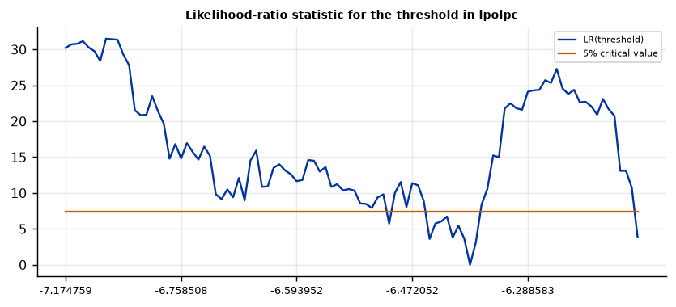

Run this model on your own data in Open Econometric Systems →
Step 1The question and the model
Does the slope change when a threshold variable crosses a value? With unit effects \(\mu_i\), a regressor \(x_{it}\), controls \(z_{it}\) and a threshold variable \(q_{it}\), the one-threshold model is
The unit effects are removed by the within transformation. For each candidate \(\gamma\) the model is linear in the slopes, so \(\gamma\) is estimated by least squares: the value that gives the smallest sum of squared residuals over a grid. Inference has two nonstandard parts. Under the null of no threshold, \(\gamma\) is not identified, so the usual \(F\) test fails and Hansen's bootstrap supplies the \(p\)-value. The confidence interval for \(\gamma\) is the set of values at which the likelihood-ratio statistic stays below a critical value, not a symmetric interval around the estimate.
Three checks before you trust a threshold model
- Is there a threshold at all? Look at the bootstrap \(p\)-value of the test against a linear model first. If it does not reject, the regime estimates are descriptive.
- Is the threshold precisely located? A wide likelihood-ratio interval or a flat likelihood means the data barely locate the threshold, and the regime slopes depend on where you put it.
- Is each regime well populated? A regime with few observations or few units gives noisy slopes. The trimming fraction keeps every regime above a minimum share of the sample.
How to write it: the model
We estimate a panel threshold regression (Hansen 1999) in which the effect of the probability of arrest on the crime rate may differ across counties with low and high police presence. The crime rate and the probability of arrest are in logs, the model includes county fixed effects, and the probability of conviction and the average sentence enter with a common slope. The threshold variable is log police per capita. The threshold is searched over 100 grid points between the 5th and 95th percentiles of the threshold variable, the test against a linear model uses a bootstrap with 300 replications, and standard errors of the slopes are clustered by county.
Step 2Load the data and look at the threshold variable
import numpy as np
import pandas as pd
import oes_engine as oes # pip install -e open-econometric-systems/oes-engine
data = open("crime4.csv").read()
df = pd.read_csv("crime4.csv")
print(f"{df.county.nunique()} counties, {df.year.min()}-{df.year.max()}, observations per county: {sorted(df.groupby('county').size().unique())}")
print(df[["lcrmrte", "lprbarr", "lprbconv", "lavgsen", "lpolpc"]].describe().round(2).loc[["mean", "std", "min", "max"]])
print(df.lpolpc.quantile([.05, .25, .5, .75, .95]).round(2).to_dict())
print("share of the variance of log police that is between counties:",
round(df.groupby("county").lpolpc.transform("mean").var() / df.lpolpc.var(), 2))90 counties, 81-87, observations per county: [np.int64(7)]
lcrmrte lprbarr lprbconv lavgsen lpolpc
mean -3.61 -1.27 -0.69 2.15 -6.49
std 0.57 0.42 0.61 0.27 0.53
min -6.31 -2.83 -2.68 1.44 -7.69
max -1.81 1.01 3.61 3.25 -3.34
{0.05: -7.17, 0.25: -6.73, 0.5: -6.54, 0.75: -6.32, 0.95: -5.74}
share of the variance of log police that is between counties: 0.78How to read it
The panel is balanced: 90 counties observed for seven years (1981-87), 630 observations. The threshold variable, log police per capita, has a median of -6.54 and a 5th to 95th percentile range of -7.17 to -5.74. Seventy-eight percent of its variance is between counties, so the regimes are mostly defined by which counties are well policed, while the slope is identified from changes within counties over time. A regime that is almost a fixed county characteristic is worth knowing about before interpreting the result as an effect of changing police levels.
Step 3Test for a threshold and estimate it
spec = dict(y="lcrmrte", x=["lprbarr"], controls=["lprbconv", "lavgsen"], threshold="lpolpc", unit="county", time="year",
trim=0.05, grid=100, boot=300)
r = oes.run("pthresh", data, spec)
oes.summary(r)
oes.show(r, "Tests for the number")
oes.show(r, "Estimated thresholds")
oes.plot(r, "Likelihood-ratio", ncols=1, size=(6.5, 3))Observations: 630
Units: 90
Periods: 7
Threshold variable: lpolpc
Thresholds found: 1
Threshold estimate: -6.3825
Bootstrap p (F1): 0.027
Tests for the number of thresholds
F statistic Bootstrap p-value 10% critical value 5% critical value 1% critical value
Test
No threshold against one threshold 31.496 0.027 21.45 24.76 33.36
One threshold against two (first threshold fixed) 12.683 0.190 16.01 18.87 26.49
Note: Bootstrap with 300 replications under the model without the threshold (Hansen 1999). The threshold is not identified under the null, so the bootstrap replaces the F distribution.
Estimated thresholds
Estimate 95% confidence interval Note
Threshold
Threshold 1 -6.3825 [-6.4936, -5.756] 68.6% of observations at or below
Note: The interval is the set of thresholds at which the likelihood-ratio statistic is below 7.35 (Hansen 1999).
How to read it
The bootstrap test rejects a linear model: the F statistic is 31.5 and the bootstrap p-value is 0.027, with 5% and 1% critical values of 24.8 and 33.4. The threshold is -6.38 in log police per capita, which puts 69% of the observations (432 of 630) in the low-police regime. The 95% confidence interval runs from -6.49 to -5.76; its upper end is the upper edge of the grid (the 95th percentile of the threshold variable), so the likelihood-ratio statistic stays flat above the estimate and the data cannot rule out a higher threshold. The likelihood-ratio chart shows the same: a sharp dip at the estimate and a long flat stretch to the right.
Step 4Slopes by regime
oes.show(r, "Coefficients by regime")
oes.show(r, "Observations by regime")
lin = oes.run("fe", data, dict(y="lcrmrte", x=["lprbarr", "lprbconv", "lavgsen"], unit="county", time="year", effects="unit"))
print("Linear fixed-effects slope on lprbarr:", lin["tables"][0]["rows"][0][1:3])Coefficients by regime (2 regimes)
Coef. Std. err. t p-value 95% CI low 95% CI high
Variable
lprbarr | lpolpc <= -6.3825 -0.1528 0.1218 -1.2541 0.2104 -0.3921 0.0865
lprbarr | lpolpc > -6.3825 -0.2887 0.1048 -2.7535 0.0061 -0.4946 -0.0827
lprbconv -0.1361 0.0759 -1.7923 0.0737 -0.2852 0.0131
lavgsen 0.0163 0.0429 0.3795 0.7045 -0.0680 0.1006
Note: Unit fixed effects removed; standard errors clustered by unit.
Observations by regime
Observations Share (%)
Regime
lpolpc <= -6.3825 432 68.6
lpolpc > -6.3825 198 31.4
Linear fixed-effects slope on lprbarr: [-0.194081, 0.112254]How to read it
The slope of the crime rate on the probability of arrest is -0.153 (standard error 0.122) in counties with police per capita at or below the threshold and -0.289 (0.105) above it. Only the high-police slope is significantly different from zero (p = 0.006); the 95% intervals of the two slopes overlap (-0.39 to 0.09 against -0.49 to -0.08). The linear fixed-effects slope is -0.194 (0.112), roughly the average of the two regimes. The pattern fits the view that a higher arrest probability deters crime more where enforcement is stronger, but the data support it only moderately: the threshold is detected, while the difference between the two slopes is imprecisely estimated.
Step 5One threshold or two?
oes.show(r, "Tests for the number")
two = oes.run("pthresh", data, dict(spec, max_thresholds=2))
print([s["value"] for s in two["summary"] if s["label"] in ("Thresholds found", "Threshold estimate")])Tests for the number of thresholds
F statistic Bootstrap p-value 10% critical value 5% critical value 1% critical value
Test
No threshold against one threshold 31.496 0.027 21.45 24.76 33.36
One threshold against two (first threshold fixed) 12.683 0.190 16.01 18.87 26.49
Note: Bootstrap with 300 replications under the model without the threshold (Hansen 1999). The threshold is not identified under the null, so the bootstrap replaces the F distribution.
[1, -6.3825]How to read it
The test of one threshold against two does not reject (F = 12.7, bootstrap p = 0.19, 5% critical value 18.9), so one threshold is enough and the engine reports the single-threshold model. The second threshold is searched with the first fixed at its estimate, which is valid because the first estimate converges faster.
Step 6Robustness: grid, trimming, bootstrap seed and controls
variants = {"baseline": {}, "trim 10%": dict(trim=0.10), "trim 15%": dict(trim=0.15), "grid 50": dict(grid=50), "grid 200": dict(grid=200),
"other seed": dict(seed=2024), "no controls": dict(controls=[]), "add conviction slope": dict(x=["lprbarr", "lprbconv"], controls=["lavgsen"])}
out = {}
for name, v in variants.items():
rr = oes.run("pthresh", data, dict(spec, **v))
t = {s["label"]: s["value"] for s in rr["summary"]}
c = [x for x in rr["tables"] if x["title"].startswith("Coefficients")][0]["rows"]
arrest = [x[1] for x in c if x[0].startswith("lprbarr")]
out[name] = [t["Threshold estimate"], t["Bootstrap p (F1)"], arrest[0], arrest[1]]
print(pd.DataFrame(out, index=["threshold", "p (no threshold)", "arrest slope, low", "arrest slope, high"]).T.round(3))threshold p (no threshold) arrest slope, low arrest slope, high baseline -6.382 0.027 -0.153 -0.289 trim 10% -6.381 0.003 -0.153 -0.293 trim 15% -6.382 0.003 -0.152 -0.292 grid 50 -6.373 0.007 -0.150 -0.295 grid 200 -6.373 0.023 -0.150 -0.295 other seed -6.382 0.020 -0.153 -0.289 no controls -6.382 0.073 -0.044 -0.160 add conviction slope -6.410 0.030 -0.164 -0.312
How to read it
The threshold estimate is stable: -6.37 to -6.41 under every variant. The test against a linear model rejects at 5% in every case except without controls (p = 0.073), where both arrest slopes are smaller in size (-0.044 and -0.160) but the high-police slope is still about three times the low-police slope. When the slope of the probability of conviction is also allowed to change with the regime, the arrest slopes become -0.164 and -0.312, so the difference is, if anything, larger. A grid of 50, 100 or 200 points, trimming of 5% to 15% and a different bootstrap seed change the threshold by at most 0.01 and the bootstrap p-value stays between 0.003 and 0.027.
drop = []
for y in sorted(df.year.unique()):
rr = oes.run("pthresh", df[df.year != y].to_csv(index=False), dict(spec, boot=100))
t = {s["label"]: s["value"] for s in rr["summary"]}
drop.append((int(y), round(t["Threshold estimate"], 2), round(t["Bootstrap p (F1)"], 3)))
print(drop)[(81, -6.67, 0.06), (82, -6.37, 0.0), (83, -6.38, 0.04), (84, -6.45, 0.03), (85, -5.81, 0.0), (86, -6.37, 0.03), (87, -5.72, 0.0)]
How to read it
Dropping one year at a time moves the threshold estimate between -6.67 and -5.72 (it is -6.37 to -6.45 in four of seven cases) and the bootstrap p-value between 0.00 and 0.06, with only 1981 pushing it above 5% (p = 0.06). The result does not depend on a single year, though with seven years a leave-one-year-out check has little power to distinguish. Report the range.
Step 7Write the results
How to write it: results
A test against a linear model rejects at the 5% level (Hansen bootstrap, F = 31.5, p = 0.027) and locates a threshold at -6.38 in log police per capita, with 69% of the county-years below it (95% confidence interval -6.49 to -5.76, bounded above by the edge of the search grid). Below the threshold the elasticity of the crime rate with respect to the probability of arrest is -0.15 (clustered standard error 0.12); above it, -0.29 (0.10). A second threshold is not supported (p = 0.19). The threshold is stable across grid size, trimming, the bootstrap seed and the choice of controls, and the high-police slope is larger in size in every variant, but the confidence intervals of the two slopes overlap, so we read the evidence as consistent with stronger deterrence where policing is heavier rather than as a precise estimate of the difference. Because 78% of the variation in police per capita is between counties, the regimes largely separate counties rather than periods.
| Report | What | Where |
|---|---|---|
| Model | Regressors, threshold variable, controls, effects, grid, bootstrap | Step 1 |
| Data | Distribution of the threshold variable | Step 2 |
| Test and estimate | Bootstrap test, threshold, likelihood-ratio interval | Step 3 |
| Slopes | Coefficients by regime, comparison with the linear model | Step 4 |
| Number of thresholds | One against two | Step 5 |
| Robustness | Grid, trimming, seed, controls, dropping years | Step 6 |
References. Hansen, B. (1999), "Threshold Effects in Non-Dynamic Panels: Estimation, Testing, and Inference," Journal of Econometrics 93. Hansen, B. (2000), "Sample Splitting and Threshold Estimation," Econometrica 68. Bai, J. (1997), "Estimating Multiple Breaks One at a Time," Econometric Theory 13. Cornwell, C. and Trumbull, W. (1994), "Estimating the Economic Model of Crime with Panel Data," Review of Economics and Statistics 76. Wang, Q. (2015), "Fixed-Effect Panel Threshold Model Using Stata," Stata Journal 15.